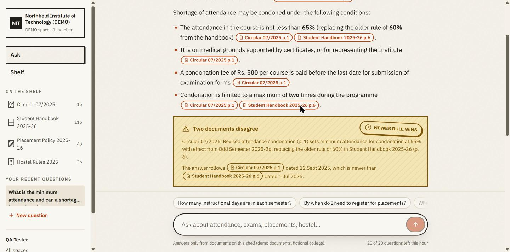
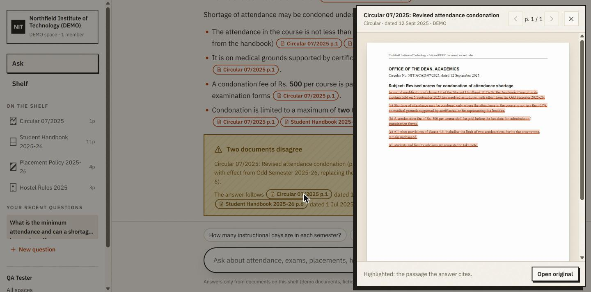
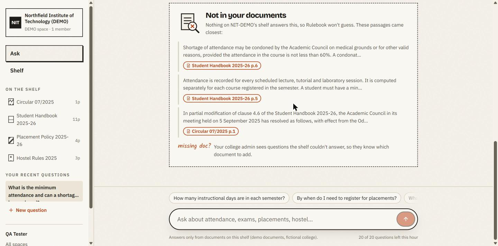
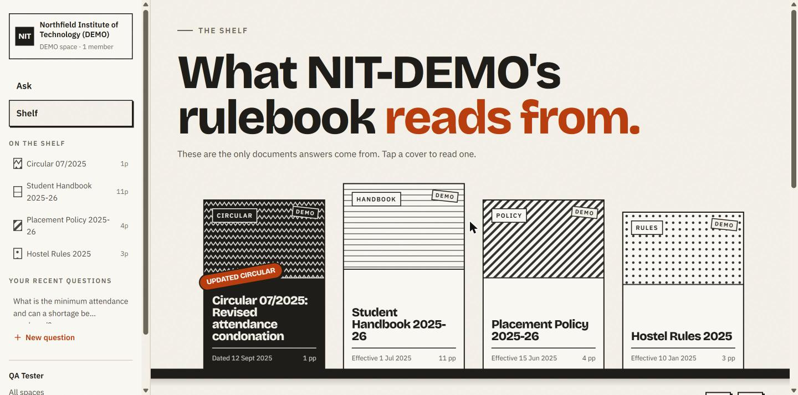
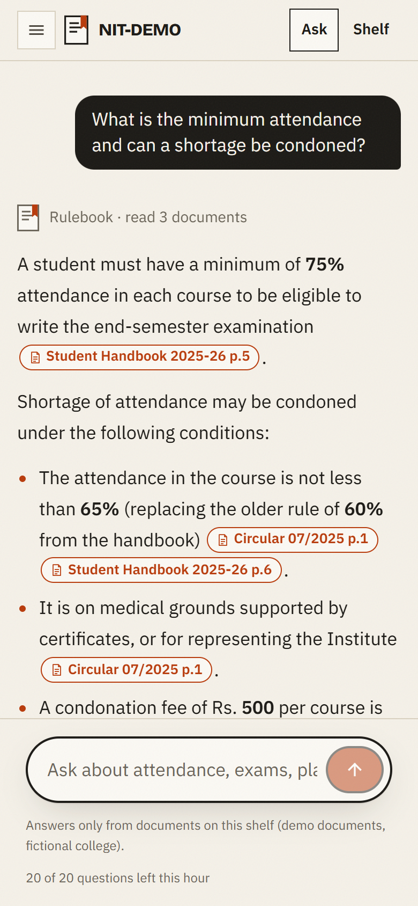

The rules, answered. With the page number.
Attendance cut-offs, re-evaluation fees, backlog limits for placements and hostel in-times are buried in 200-page PDFs and scattered circulars. Rulebook lets a college upload them once. Students then ask in plain words and get an answer where every line links to the exact page. When a newer circular changes a rule, the answer follows the circular. When the documents don't say, Rulebook says so.
This page is a static showcase. The working app needs a server, a Postgres database with pgvector and a Gemini API key, so it can't run on GitHub Pages. The screenshots below are of the real app, running locally on a fictional demo college. The design preview uses demo data.
Calm on purpose. You came here to read a rule.
All screens are from the working app, asking questions of a fictional college ("Northfield Institute of Technology, DEMO").





Built for the phone in a student's pocket.
- Multi-college. Any college creates a space; students join with an invite link. Colleges are fully isolated, and tests check it.
- Scanned PDFs work. Pages without a text layer go through OCR before indexing.
- Hybrid search. pgvector similarity and Postgres full-text search, merged and re-ranked.
- Safe with untrusted PDFs. Text inside documents is treated as data, never as instructions.
- Admins see the gaps. Unanswered and downvoted questions show which document is missing.
15 questions, real model calls.
The evaluation script asks the demo college 15 questions with a known answer page, 3 it can't answer, and one with a planted prompt injection.
The demo corpus (19 pages) and the questions are my own, so real handbooks will score lower. The script exists so those numbers can be measured.
Four commands and two keys.
You need a Postgres database with pgvector (Neon's free tier works) and a free Gemini API key. Full steps are in the README.
cp .env.example .env # add DATABASE_URL and GEMINI_API_KEY
npm install
npm run db:migrate
npm run db:seed # builds the fictional demo college
npm run dev # http://localhost:3000